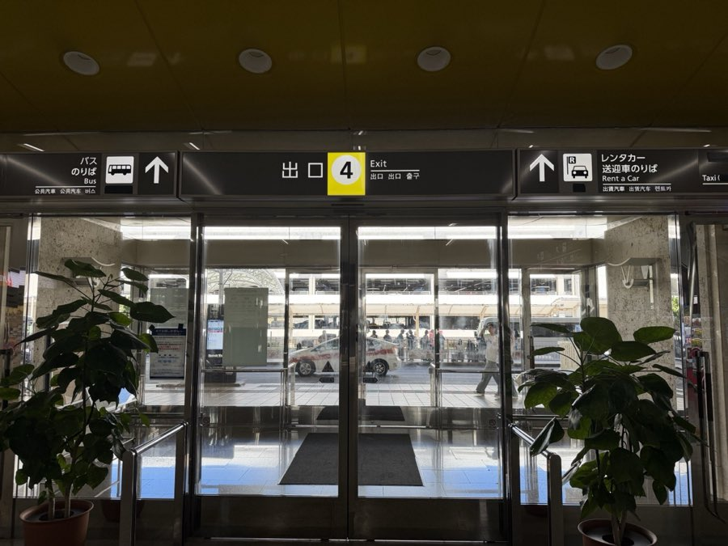
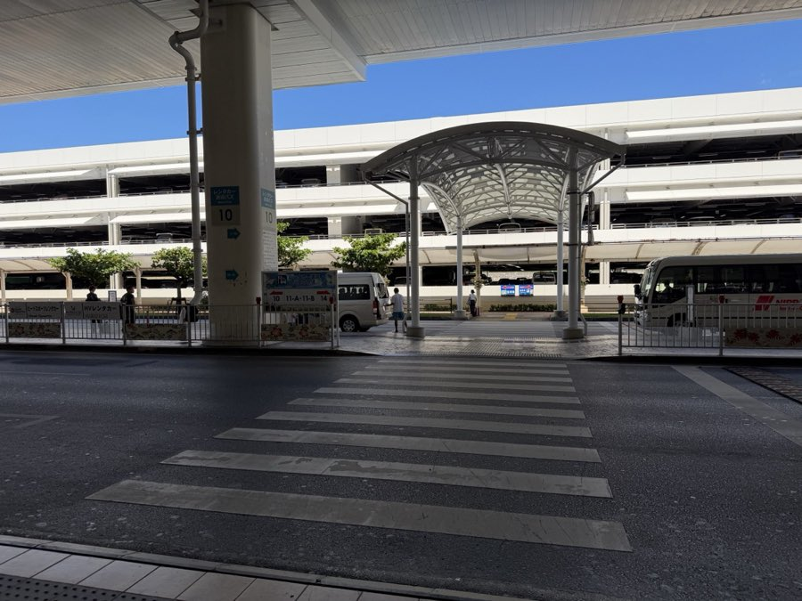
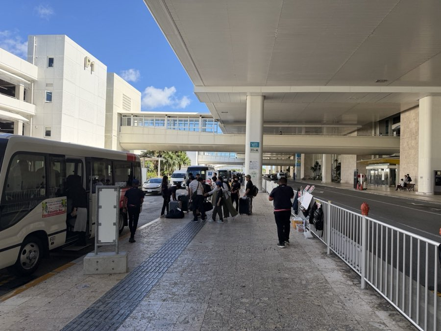
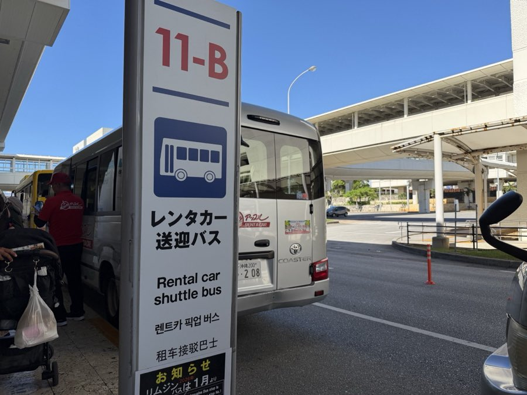
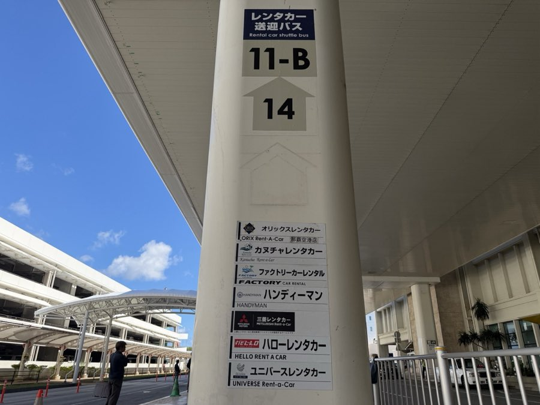
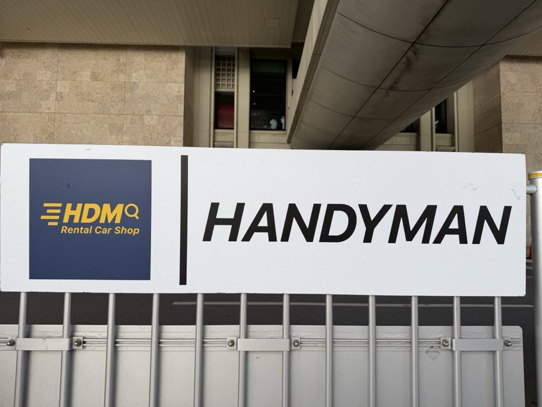
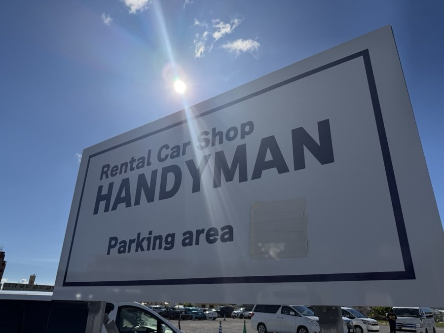

🚌 バスの時刻表
✅ 決まった時刻に運行している無料バスなので、事前のご予約は不要です。ご都合のよい便に合わせて、直接乗り場までお越しください。
✈ 那覇空港発
那覇空港「レンタカー送迎バス乗り場」11番 → HANDYMAN
🏢 ヤード発
HANDYMAN → 那覇空港（出発口）
※ 時刻はおおよその目安で、道路の混雑状況などにより前後することがあります。営業時間は9:00〜19:00です。
🚌 無料送迎バスの乗り方
🛬 那覇空港 → HANDYMAN第2ヤード（ご出発の場所）
📍 バス乗り場への行き方
- 1那覇空港1階にある「出口4」から建物の外へ出てください。

- 2目の前にある横断歩道を渡ってください。

- 3横断歩道を渡ったら、右（→）へ向かいます。

- 4そのまま「レンタカー送迎バス 11-B のりば」まで歩きます。

- 5無料送迎バスは、HANDYMAN（ハンディーマン）の停車場〔11-B・14番〕に停まります。


到着ロビーから外に出たら、看板を目印に「11-B のりば」で無料送迎バスへお乗りください。
🛫 第2ヤード → 那覇空港（お帰りの送迎）
- 🚩ご返却場所の目印：「HANDYMAN Parking area」と書かれたこちらの看板がある場所が第2ヤードです。

お車を返却されたら、第2ヤードの乗り場から無料送迎バスで那覇空港までお送りいたします。